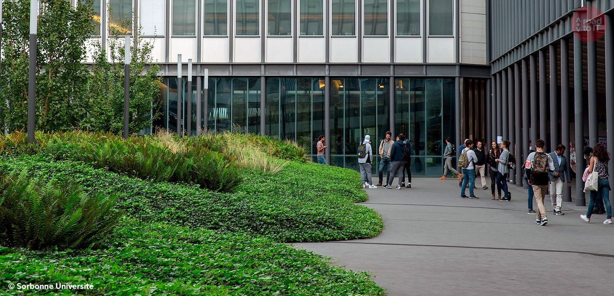

Sorbonne University
Created from the merger of highly reputable universities UPMC and Paris Sorbonne, Sorbonne University is one of the biggest Parisian universities, with more than 55,000 students on its various campuses. The university offers several courses in computer science, in French or in English, for long or short periods.
| The Info Box |   |
|---|---|
| üè¢ School Name | Sorbonne Universit√© |
| üåê Location | Paris, France |
| ⚖️ Type | Public University |
| üìÜ Course Duration | 3 to 8 years |
| üá™üá∫ Erasmus Students | Accepted |
| üíµ Price | ‚âà 100‚Ǩ (licence) to 601‚Ǩ/year (engineering master) |
Present in the top 50 of the World’s Top Universities according to the 2019 Shanghai University Rankings, The Sorbonne University is also one of the most important scientific hubs in Paris with very important research structures : 136 research units including 66 of the Faculty of Science & Engineering.
Sorbonne University’s most important resource is it community of men and women who contribute to its missions through the diversity of their fields, the research they do and their personal and professional fulfilment.
– Ambassadors of Sorbonne University
Students from all over the world come to Sorbonne University. They do this through Erasmus programs, international agreements, or by just applying directly for one of the degree programs. As this blog is dedicated to Computer Science and IT, you can discover the other courses offered by the University on their website.

A hub with scientific programs
Three choices of studies are offered by Sorbonne University : A 3-year bachelor, a 2-year master and a 3-year doctorate (with special arrangements for medicine courses). Within the programs, you have the choice between different major and minor to be specialized.
Here are some of the IT programs you can find at Sorbonne University :
- Bachelor’s in Computer Science (French)
- Master’s in Computer Science (English)
- Master’s in Engineering Sciences (English)
- Engineering Degree or Diplôme d’ingénieur (French and English)
Regarding the Engineering Degree, the courses take place in Polytech, a French engineering school. Polytech delivers an engineering degree (equivalent to Master’s) accredited by the French commission of the title of engineer (CTI).
During your studies, you will work on areas such as robotics (ANDROIDE), software (STL), bioinformatics (BIM), imaging (IMA), computer networks (RES) and cyber-security (SAR, SESI and SFPN). Some international programs like the Master’s in Computer Science propose a double European master in English with a major in Computer science and a minor in Innovation (Cloud and Networks Infrastructure).
If you are looking for short studies, Sorbonne University’s Faculty of Science organizes several international summer schools that are open to international students too.
A huge campus in the heart of Paris
The first time I went to the Sorbonne University’s main HQ (called Jussieu) was a few years ago. At that time, they had just finished major renovations in this huge campus, a few meters from the Seine and in the heart of Paris. This contemporary campus is home to several thousand students, with public transportation nearby (bus and metro) and a large library inside the buildings.
The University also offers solutions for housing, such as financial assistance based on your income, or residences student. You will also find health services, restaurants and cafeteria. The Jussieu campus is located in the very chic 5th borough of Paris, not far from Saint-Germain, the Marais or the Natural History Museum. As for the other schools or universities presented here, you will find many clubs or student associations to share your passion during your free hours.
| üåê International Relation Service üåê |
|---|
| International Relations Department relations.internationales@upmc.fr |